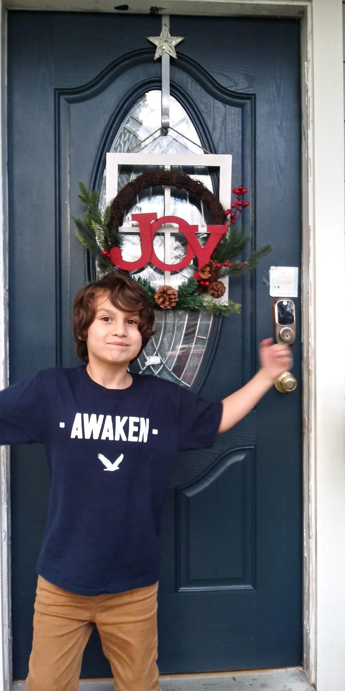

I LIVE IN HOUSTON, TX
I'm originally from Yonkers, NY but have made Houston, TX my home for the past 15 years. Houston is...different. Not the prettiest city, but the people are awesome. Really authentic with a unique style and cultural vibe. Always feeling it needs to compete with Dallas, Houston sometimes goes over the top. Lots of great restaurants, cool neighborhoods, and fantastic parks, it's definitely worth a weekend stay if you're in town for work or are in the area. Not making excuses for the Astros, they're the Trashtroes.

GROWING FAMILY
My wife Roselaine and sons Nicholas (7) and Charles (4) are awesome to spend time with. During the pandemic, we added to rescue dogs Manny, a poodle, and Camilla, a chiweenie. I hadn't heard of a chiweenie before either, it's a mix of a Dachsund and Chihuahua.
SONIC THE HEDGEHOG
My sons are obsessed with Sonic the Hedgehog. And during the pandemic, your kids' obsessions are unavoidable. Ever since we went to the movie threater (pre-COVID) 6 times to watch him. They're so obsessed that they spent over $1,000 on golden rings to help Sonic (from Apple). As a result, I learned a lot about Sonic and his friends Tails and Knuckles, his girlfriend Amy Rose, and his enemies Dr Eggman and Shadow.